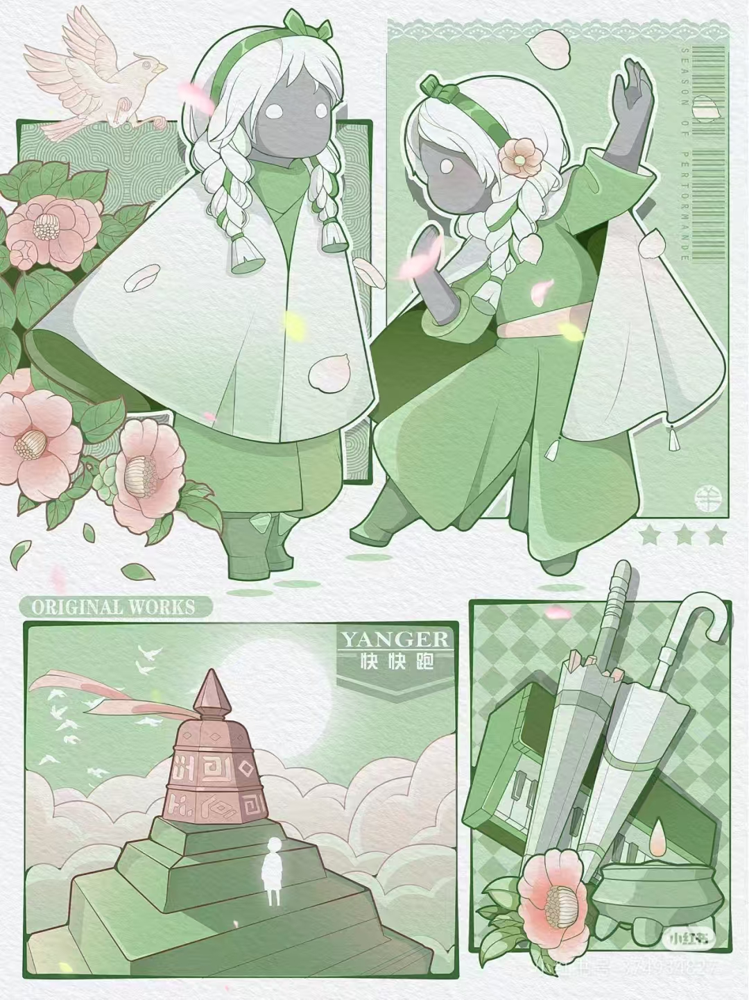

场景地图
晨岛
第一次的飞行或许还有些力不从心，但旅人们很快会发现在能量不足的时候，只要靠近光蝶就可以恢复飞行能量。光蝶也将在之后的多个场景中出现，默默追随并守护着光之后裔们，在各位旅人无法飞行时给予帮助。
晨雾朦朦，晨光氤氲，晨岛依靠着大海。在晨岛上，旅人们将学习冒险需要的基本技能。从行走到奔跑，从跳跃到飞翔，“发光小人”为你献上祝福，旅人从这一刻起接受使命蜕变成为光之后裔，披上蕴含飞行能量的斗篷，开始正式探索这个如梦似幻的世界。
旅人们在晨岛冒险时，会发现四周的“亮光”。追寻这些亮光，玩家们可能会找到先祖们遗留下来的记忆碎片，跟随先祖们了解天空王国曾经的故事。点亮先祖们的“躯体”，即可跟随先祖们学习并解锁新的动作。
在将足够多的星星送回天际后，即可开启星之门。走过石阶、点亮烛台、钟声响起，玩家即可学习如何发出能量强大的“呼唤”，从而让光蝶带领各位旅人飞向神殿。如果旅人们迷失了方向或者与小伙伴走丢了，也可以长按角色发出呼唤，光将指引各位旅人前进的方向。“呼唤”在之后的场景中还有其他的用途，等待各位旅人探索。
云野
在晨岛学习了冒险的基本技能后，相信每位“光之后裔”都会对天空王国的未知旅途充满好奇与热望。在这里，我们将进入王国的第二个场景——云野。
在云野的出发点放眼望去，是一片浩瀚无边的云海，而在云海的深处，坐落着一座神秘的宫殿。此时的你，只要勇敢地往前迈出一步，就能开启云野的飞翔之旅。路上，你可以尽情穿梭于风云之间、与白鸟为伴。随心停靠在高高低低的塔寺上。静静观赏着云海流动的飘逸与美好。除了能够欣赏到纯洁的晴空美景，更重要的是，这片云海之中的各个角落都散落着关于王国过往的秘密，以及让你增强技能的挑战关卡。
因此，在畅享自由无边的云海旅程中，还需要各位“光之后裔”不断探索发现，利用烛火和光热对抗黑暗的阻碍，照亮前路，解读王国过往的历史，收集“先祖”的回忆，细心发掘散落于各处的关卡，解锁新的动作技能。而当你完成这一路的挑战步入最高处的那座宫殿时，你将会遇见王国中的第二位“先祖”。他会向你诉说怎样的王国故事，又会赋予你怎样的使命与能力呢?留待大家在《Sky光·遇》中尽情探索。
雨林
新岁初临，万象新生，天空王国全新区域的出现预示着全新冒险的开启，旅人们可带上三两旅伴，前去探索。雨林高台静谧的树洞深处，青葱玄妙的神秘绿境正静候各位旅人的到来。
燃烧心火，触发雨林庭院的层层机关，进入雨林主场景后，若是足够细心和耐心，旅人们将能找到通向秘密花园的星之门。
雨林静谧的秘密花园中，清新舒畅生机勃发的景象暗藏玄妙，静候各位旅人发掘。或是青草绿湖，或是巨木树干下的篝火长桌，或是翠绿草甸的垒石高台，或是高台树洞下的古老石井，想要开展全新的绿境冒险，需要旅人们对奇妙景色的好奇与耐心默契的探索合作。
触发机关掉入玄妙绿境后，碧绿幽静的林中洞穴静候旅人们的唤醒多时。被光菇和绿苔占据的石峰林立，白鸟和透明的水母盘旋在绿境的半空，莹莹发光的光之生物与幽绿的石峰交织成神秘幻妙的奇妙画景。
洞穴中难以攀爬的石峰让人望而却步，但在光之生物的帮助下，旅人们可以回复能量，利用飞行和光菇组成的台阶征服峭壁，与白鸟一同登上绿境的最顶端，探得沉睡在绿境中的玄机。
霞谷
霞谷是《Sky光·遇》天空王国中的第四个场景，当玩家们经历了晨岛的朦胧，飞越过云野的晴空，跨越过湿润的雨林后，将来到霞光萦绕的霞谷。
云雾笼罩着高高低低的山谷和王国遗，空中翱翔的白鸟被镀上一层薄薄的梦幻，尽显温和柔美。从一望无际的滑雪赛道，再到气氛热泪的竞技场，霞谷又是瑰丽多变的。各位旅人将体验速度与激情的碰撞，感受溜冰竞速的乐趣。冰雪皑皑的王国沐浴在夕阳之中，旅人们可以在此尽情欣赏美景 。
随着脚步渐入佳境，霞谷的色彩也在不断变幻。最初的时候，迎着阳光，乘云而上，前往高山的云之路，被光稀释过的粉色显得温和安静，带着淡淡的温柔。在这样一条云路上飞行，身心都不自觉地放松下来。
而到了竞速赛道时，皑皑白雪在霞光的映染下，泛着微微的粉紫光。到达终点后，则变成最为热情洋溢的艳红。光影细节真实精致，色彩搭配质感满载，无论你身处何处，都将是一番极致的视听享受。
暮土
霞谷的绝美风景与滑翔体验似乎仍然在萦绕在心头不能忘怀。然而在霞谷的终点之后，你将坠入一片阴冷的荒芜之地。这是天空王国的第五个场景——暮土。
王国覆灭残留下的断壁残垣。终年被遮天蔽日的沙尘掩盖，“光之后裔”们将在这里迎来更为严峻的考验、根据王国历史的不完全统计，暮土地区的人口密度明显低于其他地区。除了荒凉的环境，这里还常有危险生物出没。这种体型庞大的危险生物，通体漆黑，全身上下布满触手，头部有如探照灯般的触角，当地居民们会把它称作“大龙虾”。
大龙虾”常年在暮土中央区域的上空游曳，当它一旦发现了“光之后裔”，头部的探照灯就会亮起“警告”的红色，并以极高的速度向你发起冲撞。，被大龙虾撞到的瞬间，你会失去数个表情动作。如果不能在倒计时内重新拾起，你将需要回到相应的场景关卡重新挑战，才能重获这些表情动作。
然而在这不见天日的环境中，一边辨明前路，一边躲避危险，并不是一件容易的事情。“光之后裔”们能否经受住这样的挑战?
禁阁
从禁阁小广场一路向前，穿过大门，玩家将进入禁阁的初始层。抬眼望去，这座塔楼似乎没有顶端。点燃圆台周围的烛台后，静静地坐在圆台上，玩家将随之缓缓上升，到达禁阁的底层。
在底层，旅人们四周开始浮现出闪烁的星火。原本半埋在地上的石盘升起成为浮动台阶，墙上的瓦罐散发着点点荧光。初始层和底层都有着隐藏的大门，需要旅人们和小伙伴协作才能打开。
随着圆台缓缓上升，旅人们将来到禁阁二层。浮动的石盘围绕着神坛转动，植物们变得晶莹剔透。每上升一层，星空中就会浮现一个星座图，记录着旅人们一路以来的点点滴滴。
升至三层，这里有浪漫的星火瀑布，透明而布满星火的遥鲲围绕着圆台飞行。点燃遥鲲身上的烛台后于圆台端坐，圆台将再次缓缓升起。
来到禁阁四层，旅人们将见到巨大的骨架以及被烛台禁锢的巨型遥鲲。点燃遥鲲身上的烛台，多只遥鲲将盘旋而上，构成前往顶层的阶梯。
跟随恢复自由的遥鲲飞往顶层。顶层的星图将幻化作记录王国历史的画像，旅人们一路帮助的先祖重现眼前，并赋予了光之后裔最终的使命。
伊甸之眼
在“伊甸之眼”中，玩家将迎来前所未有的挑战与考验。进入“伊甸之眼”需要玩家达到一定要求，才具备挑战的资格。在“伊甸之眼”中，要前行只能一步一步地攀爬峭壁。